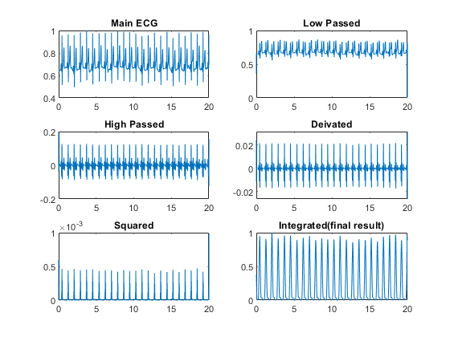
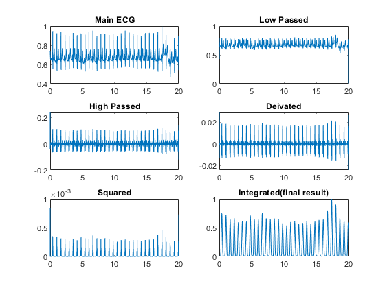
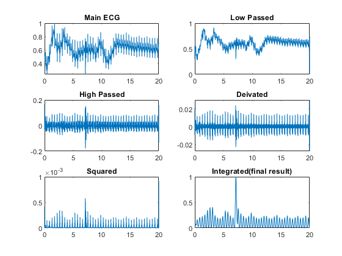
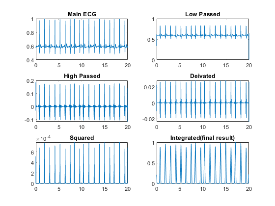
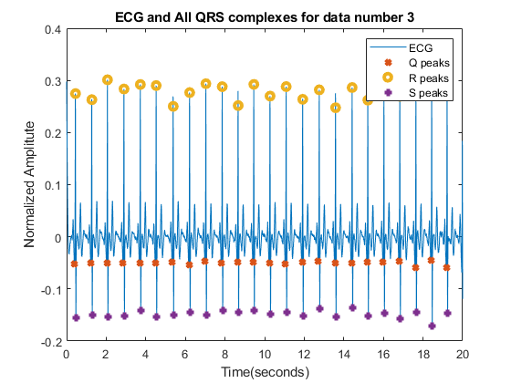
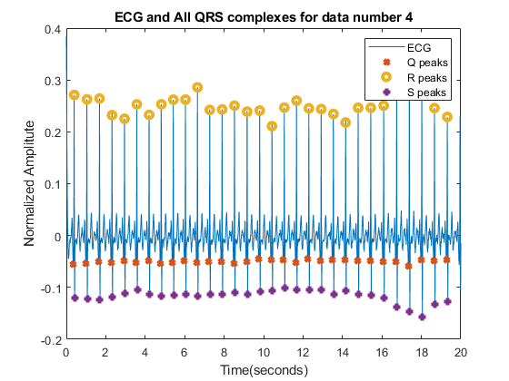
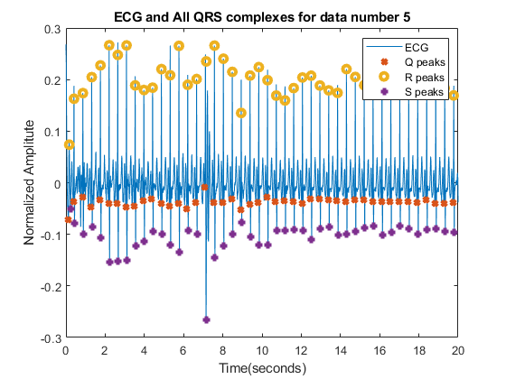
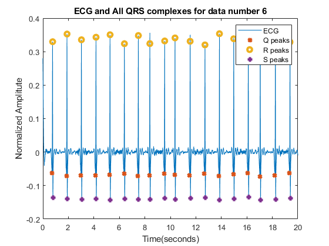

Contents
clc close all clear ECG3 = transpose(load('ECG3.dat')); ECG3 = ECG3/max(ECG3); ECG4 = transpose(load('ECG4.dat')); ECG4 = ECG4/max(ECG4); ECG5 = transpose(load('ECG5.dat')); ECG5 = ECG5/max(ECG5); ECG6 = transpose(load('ECG6.dat')); ECG6 = ECG6/max(ECG6); Fs = 200; R3 = pan_tomp(ECG3,Fs ,20, 1); R4 = pan_tomp(ECG4,Fs ,50, 1); R5 = pan_tomp(ECG5,Fs ,50, 1); R6 = pan_tomp(ECG6,Fs ,20, 1); [pks3 , locs3] = QRS_peaks_finder(ECG3,Fs, 1); [pks4 , locs4] = QRS_peaks_finder(ECG4,Fs, 1); [pks5 , locs5] = QRS_peaks_finder(ECG5,Fs, 1); [pks6 , locs6] = QRS_peaks_finder(ECG6,Fs, 1);








Part A:
clc disp('Total Heart beats recognized:') fprintf('\nTotal heart beats of ECG3 = %d\n',length(locs3(1,:))) fprintf('Total heart beats of ECG4 = %d\n',length(locs4(1,:))) fprintf('Total heart beats of ECG5 = %d\n',length(locs5(1,:))) fprintf('Total heart beats of ECG6 = %d\n\n',length(locs6(1,:))) disp('Heart rates:') fprintf('\nHeart rate of ECG3 = %d (bpm)\n', length(locs3(1,:)) * 60 /(length(ECG3) / Fs) ) fprintf('Heart rate of ECG4 = %d (bpm)\n', length(locs4(1,:)) * 60 /(length(ECG4) / Fs) ) fprintf('Heart rate of ECG5 = %d (bpm)\n', length(locs5(1,:)) * 60 /(length(ECG5) / Fs) ) fprintf('Heart rate of ECG6 = %d (bpm)\n\n', length(locs6(1,:)) * 60 /(length(ECG6) / Fs) )
Total Heart beats recognized: Total heart beats of ECG3 = 24 Total heart beats of ECG4 = 31 Total heart beats of ECG5 = 45 Total heart beats of ECG6 = 18 Heart rates: Heart rate of ECG3 = 72 (bpm) Heart rate of ECG4 = 93 (bpm) Heart rate of ECG5 = 135 (bpm) Heart rate of ECG6 = 54 (bpm)
Part B
R_R3 = R_R_intervals(ECG3, Fs); %unit is seconds R_R4 = R_R_intervals(ECG4, Fs); R_R5 = R_R_intervals(ECG5, Fs); R_R6 = R_R_intervals(ECG6, Fs); std3 = std(R_R3)*1000; %unit is mili seconds std4 = std(R_R4)*1000; std5 = std(R_R5)*1000; std6 = std(R_R6)*1000; mean_R_R3 = mean(R_R3) * 1000; %unit is mili seconds mean_R_R4 = mean(R_R4) * 1000; mean_R_R5 = mean(R_R5) * 1000; mean_R_R6 = mean(R_R6) * 1000; disp('Mean R to R intervals (in milli seconds):') fprintf('\nMean R to R intervals of ECG3 = %d\n', mean_R_R3) fprintf('Mean R to R intervals of ECG4 = %d\n', mean_R_R4) fprintf('Mean R to R intervals of ECG5 = %d\n', mean_R_R5) fprintf('Mean R to R intervals of ECG6 = %d\n\n', mean_R_R6) disp('Standard Deviation of R to R intervals (in milli seconds):') fprintf('\nSTD of R to R of ECG3 = %d\n', std3) fprintf('STD of R to R of ECG4 = %d\n', std4) fprintf('STD of R to R of ECG5 = %d\n', std5) fprintf('STD of R to R of ECG6 = %d\n\n', std6)
Mean R to R intervals (in milli seconds): Mean R to R intervals of ECG3 = 8.158696e+02 Mean R to R intervals of ECG4 = 6.305000e+02 Mean R to R intervals of ECG5 = 4.455682e+02 Mean R to R intervals of ECG6 = 1.095294e+03 Standard Deviation of R to R intervals (in milli seconds): STD of R to R of ECG3 = 1.934449e+01 STD of R to R of ECG4 = 1.275431e+01 STD of R to R of ECG5 = 3.308228e+01 STD of R to R of ECG6 = 1.073760e+02
Part C
QRS_intervals3 = QRS_intervals(ECG3, Fs); QRS_intervals4 = QRS_intervals(ECG4, Fs); QRS_intervals5 = QRS_intervals(ECG5, Fs); QRS_intervals6 = QRS_intervals(ECG6, Fs); mean_QRS_interval3 = mean(QRS_intervals3) * 1000; % unit is milli seconds mean_QRS_interval4 = mean(QRS_intervals4) * 1000; mean_QRS_interval5 = mean(QRS_intervals5) * 1000; mean_QRS_interval6 = mean(QRS_intervals6) * 1000; disp('Mean of every QRS length (in milli seconds):') fprintf('\nmean length of QRS in ECG3 = %d\n', mean_QRS_interval3) fprintf('mean length of QRS in ECG4 = %d\n', mean_QRS_interval4) fprintf('mean length of QRS in ECG5 = %d\n', mean_QRS_interval5) fprintf('mean length of QRS in ECG6 = %d\n\n', mean_QRS_interval6)
Mean of every QRS length (in milli seconds): mean length of QRS in ECG3 = 5.812500e+01 mean length of QRS in ECG4 = 6.096774e+01 mean length of QRS in ECG5 = 6.022222e+01 mean length of QRS in ECG6 = 5.222222e+01
Part D
disp('in ECG6 first Heart beat & in ECG4 last one was not detected! but that was not a complete heart cycle')
in ECG6 first Heart beat & in ECG4 last one was not detected! but that was not a complete heart cycle